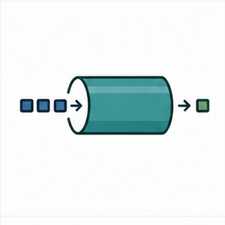
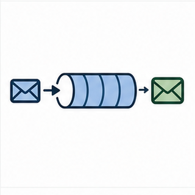

Keys: Left/Right or PageUp/PageDown to move, Home/End to jump, S to toggle slideshow, F for fullscreen, Z for fit/fill, Esc to exit.
Task Notifications and Direct-to-Task Communication
Task notifications are lightweight per-task communication slots. They are powerful when exactly one task is the receiver and the notification value semantics are chosen deliberately.
Course: FreeRTOS Lecture
Embedded Systems Laboratory, Pusan National University
Instructor: Prof. Yunju Baek
Learning path
- Direct notification path versus separate kernel objects
- Binary, counting, bitfield, and value-overwrite patterns
- eNotifyAction and notification value semantics
- FromISR handoff and receiver task identity
- Object-choice review against queues, semaphores, and event groups
First target: notifications are fast because the state belongs to the receiving task.
01
Course Position
Module 12 combined multiple condition bits in an event group. Module 13 narrows the receiver model to one task and removes the separate communication object.

Direct receiverThe sender targets one known task handle.
Notification valueThe value can behave as a signal, count, bitfield, or overwritten value.

Object comparisonNotifications are not buffered payload queues.
The module is about direct-to-task communication and its limits.
02
Problem Frame
Single receiverA driver, ISR, or worker needs to wake one known task and no other task needs the event.
Small stateThe event can be represented as a count, bitfield, or latest value inside the task notification value.
Low overheadA separate queue, semaphore, or event group object may be unnecessary.
Coupling riskThe sender must know the receiver task handle and the agreed notification semantics.
Notifications are elegant when the receiver model is truly one-to-one.
03
Terminology Before APIs
| Term | Meaning in this module |
|---|
| Task notification | Per-task notification state used for direct event delivery. |
| Notification value | A task-owned integer value updated by notification APIs. |
| Notification state | Internal state that records whether a task has a pending notification. |
| ulTaskNotifyTake() | API commonly used for binary or counting notification take patterns. |
| xTaskNotifyWait() | API used to wait for notification bits or values. |
| eNotifyAction | Mode that controls how a notify operation updates the notification value. |
| Indexed notification | A notification array entry used when configTASK_NOTIFICATION_ARRAY_ENTRIES is greater than one. |
| Single receiver | The design condition that exactly one task owns the notification destination. |
The notification value must have one documented meaning.
04
Primary Visual Anchor
Reading Order
- Sender uses a task handle, not a separate queue object.
- Notification state is stored with the receiving task.
- The receiving task waits or takes from its own notification state.
- This is a direct path only when one receiver is correct.
Source: FreeRTOS Kernel Book, Figure 10.2.
The direct path is the reason notifications are lightweight.
05
Communication Object Path for Comparison
Reading Focus
- Queues, semaphores, and event groups are separate kernel objects.
- The object can mediate between senders and receivers.
- The object can carry buffering or shared condition semantics.
- Notifications remove this object only when the design allows it.
Source: FreeRTOS Kernel Book, Figure 10.1.
A notification is not a universal replacement for communication objects.
06
Direct Path Mental Model
SenderTask or ISR has a handle for the receiving task.
→
Notify actionThe API updates pending state and notification value.
→
Receiver taskThe task unblocks and reads or consumes its notification state.
→
Application workThe task maps the value to event, count, bits, or latest value.
A task notification is a small state machine embedded in the receiving task.
07
API Surface Map
Send
xTaskNotify()xTaskNotifyGive()xTaskNotifyFromISR()vTaskNotifyGiveFromISR()
Wait or take
ulTaskNotifyTake()xTaskNotifyWait()xTaskNotifyStateClear()ulTaskNotifyValueClear()
Indexed variants
xTaskNotifyIndexed()ulTaskNotifyTakeIndexed()xTaskNotifyWaitIndexed()configTASK_NOTIFICATION_ARRAY_ENTRIES
The API family is broad because the notification value has several possible meanings.
08
eNotifyAction Semantics
eNoActionSet pending state without changing the value; useful when value is irrelevant.
eSetBitsOR bits into the value; useful for bitfield-style conditions for one receiver.
eIncrementIncrement the value; useful for counting events without a separate counting semaphore.
eSetValueOverwrite or set value with or without overwrite protection; useful only when loss policy is explicit.
The notify action is the semantics contract.
09
Binary Notification Pattern
Pattern
- Sender calls xTaskNotifyGive or vTaskNotifyGiveFromISR.
- Receiver waits with ulTaskNotifyTake.
- The notification wakes one task.
- No payload is carried.
Good fit
- One ISR wakes one worker task.
- A driver completion signal has one owner.
- A separate binary semaphore would add an object without adding meaning.
Binary notification is the one-receiver version of a simple event signal.
10
Counting Notification Pattern
Notification Comparison
- eIncrement can count repeated events for one receiver.
- ulTaskNotifyTake can decrement or clear the count depending on API use.
- Counting semaphore remains clearer when the count is a shared resource object.
- Queue remains necessary when each event carries payload.
Source: FreeRTOS Kernel Book Figure 7.8, used for comparison.
Counting notification is efficient only when the receiver is singular.
11
Bitfield Notification Pattern
Notification Comparison
- eSetBits can create a one-task bitfield.
- xTaskNotifyWait can clear selected bits on entry or exit.
- Event groups remain clearer when multiple tasks observe shared conditions.
- Document each bit and clear policy exactly as in Module 12.
Source: FreeRTOS Kernel Book Figure 9.2, used for comparison.
A notification bitfield is a private event group for one task.
12
Value Overwrite Pattern
eSetValueWithOverwrite
Store latest value even if an older notification is pending.
Intermediate values can disappear.
eSetValueWithoutOverwrite
Store value only if no notification is pending.
Sender must handle pdFAIL.
Queue alternative
Preserve a sequence of values or payload records.
Uses a separate object and queue storage.
Overwrite is a policy, not an accident.
13
Kernel Book Figure 10.4: Execution Sequence
Reading Focus
- Trace the sender and receiving task.
- Mark when the receiver blocks.
- Mark when notification state changes.
- Explain why the receiver becomes Ready.
Source: FreeRTOS Kernel Book, Figure 10.4.
Notifications still create task-state transitions.
14
Kernel Book Figure 10.3: Example Output
Reading Focus
- Use output to confirm wake order.
- Map each line to the notification sequence.
- Ask whether a semaphore version would behave differently.
- Separate behavior evidence from API preference.
Source: FreeRTOS Kernel Book, Figure 10.3.
Output should confirm the direct notification mental model.
15
Kernel Book Figure 10.5: Counting Output
Reading Focus
- Read the notification value as accumulated event evidence.
- Compare with counting semaphore behavior.
- Look for whether events are consumed one by one or cleared.
- Connect output to ulTaskNotifyTake parameters.
Source: FreeRTOS Kernel Book, Figure 10.5.
The receive API controls how count-like values are consumed.
16
Kernel Book Figure 10.6: Cloud Communication Paths
Reading Focus
- Use notifications for direct events, not arbitrary architecture compression.
- Cloud or network paths often need queues, buffers, and explicit ownership.
- Notifications can wake a network task after data arrives elsewhere.
- Separate wake-up signal from payload path.
Source: FreeRTOS Kernel Book, Figure 10.6.
A notification can wake a task while payload travels through a different object.
17
Caller Context Rules
| Operation | Task context | ISR context | Review question |
|---|
| Notify receiver | xTaskNotify or xTaskNotifyGive | xTaskNotifyFromISR or vTaskNotifyGiveFromISR | Is xHigherPriorityTaskWoken handled? |
| Wait or take | Receiver task can block with timeout | ISR cannot wait | What state can the task enter? |
| Overwrite value | Allowed when loss policy is deliberate | Allowed through FromISR variant when documented | What happens to old value? |
| Indexed notification | Use selected notification slot | Use indexed FromISR variants when needed | Is slot ownership documented? |
Direct notification still has caller-context rules.
18
Indexed Notifications
Why index?A task can have multiple notification slots when configTASK_NOTIFICATION_ARRAY_ENTRIES is greater than one.
Use carefullySeparate slots can represent independent event channels for the same receiving task.
Review riskSlot meanings can become invisible unless documented like event group bit masks.
Indexed notifications are useful, but they can quietly create hidden protocols inside one task.
Each notification slot needs a written meaning.
19
Notification Versus Semaphore
Aspect
Task notification
Semaphore
Receiver model
Exactly one receiving task.
Separate object can be shared by design.
Storage
State stored in TCB notification fields.
Separate kernel object.
Best fit
One worker signal or count.
Object-level signal or count with clearer decoupling.
A notification can replace a semaphore only when one receiver is truly correct.
20
Notification Versus Queue
Aspect
Task notification
Queue
Payload
One integer value with selected update semantics.
Sequence of copied items or pointers.
Ordering
No general message history.
FIFO behavior by queue design.
Failure risk
Overwrite loss or hidden coupling.
Full queue, depth, and payload ownership issues.
Use a queue when each event record matters.
21
Notification Versus Event Group
Decision Filter
- Use notification bits when one task owns the condition set.
- Use event groups when multiple tasks observe shared condition bits.
- Use queues when payload or event order matters.
- Use semaphores when a separate signal/count object is clearer.
Shared generated infographic asset.
Notification is a receiver-specific optimization, not a shared condition object.
22
ISR Completion Mini Case
DMA ISRClears flags and identifies completion.
→
Notify workervTaskNotifyGiveFromISR updates worker notification state.
→
Yield decisionxHigherPriorityTaskWoken drives portYIELD_FROM_ISR.
→
Worker taskProcesses buffer whose ownership is defined elsewhere.
Notification wakes the worker; it does not magically define payload ownership.
23
Driver Event Bitfield Mini Case
Bits
- RX_READY.
- TX_DONE.
- ERROR.
- TIMEOUT.
Notify action
- Use eSetBits.
- Receiver uses xTaskNotifyWait.
- Clear selected bits on exit.
Review
- Exactly one driver task receives.
- Bit meanings documented.
- Queue used separately if payload exists.
A bitfield notification is a private event group for one task.
24
Latest Measurement Mini Case
Good fit
- Only latest value matters.
- Intermediate samples can be dropped.
- One processing task owns the value.
Notify action
- Use eSetValueWithOverwrite.
- Receiver reads current value.
- Document loss policy.
Bad fit
- Every sample matters.
- Order matters.
- Multiple consumers need the data.
Latest-value notification is safe only when lost intermediate values are acceptable.
25
Failure Modes Worth Naming Early
Wrong receiver model
- More than one task needs the event.
- Notification has one direct receiver.
- Use queue, event group, or another shared object.
Overwrite loss
- New value replaces old pending value.
- Intermediate events disappear.
- Use counter or queue when every event matters.
Hidden coupling
- Sender depends on receiver task handle.
- Notification slot meaning is undocumented.
- Fix with explicit architecture notes and handle ownership.
Notification bugs often come from using an optimization as architecture.
26
Diagnostic Evidence
Receiver
Value

Wake latency

Trace
State evidence
- Notification value before wait.
- Value returned from wait or take.
- Pending state and clear behavior.
Timing evidence
- Notify timestamp.
- Receiver unblock timestamp.
- ISR exit to worker start latency.
Design evidence
- Receiver task handle ownership.
- Notification slot meaning.
- Overwrite or count policy.
Debug notification semantics, not only whether the task woke.
27
Trace View for Notifications
Reading Focus
- Trace direct task wake-up and receiver execution.
- Compare notification latency with queue or semaphore path.
- Look for lost overwrite or unexpected repeated wakeups.
- Use trace before changing priorities.
Source: FreeRTOS Kernel Book, Chapter 12 trace figure.
Trace should confirm the notification value contract.
28
Tutorial 17 Reading Path
ReceiverFind the task handle and wait/take API.
→
SenderFind xTaskNotify or xTaskNotifyGive call.
→
ValueIdentify binary, counting, bitfield, or overwrite semantics.
→
OutputExplain observed lines through notification state transitions.
Tutorial 17 should be read as a direct-receiver experiment.
29
Tutorial 18 Reading Path
ISR path
- Find FromISR notification call.
- Find xHigherPriorityTaskWoken.
- Find yield-from-ISR macro.
Receiver path
- Find receiver wait/take.
- Check timeout policy.
- Check how value is consumed or cleared.
Variation
- Create repeated events.
- Switch notify action.
- Replace notification with queue when payload is required.
Tutorial 18 connects notification semantics to interrupt handoff discipline.
30
Source Reading: tasks.c Notification Paths
TCB fieldsFind notification state and value storage in task control data structures.
Notify send pathTrace how action mode updates value and unblocks a task.
Wait/take pathRead how value is returned, decremented, cleared, or left pending.
Task notifications are implemented in tasks.c because the state belongs to the task.
Source location reinforces the direct-to-task mental model.
31
Source Reading: Port and ISR Link
FromISR path
- Check xTaskNotifyFromISR and vTaskNotifyGiveFromISR.
- Track xHigherPriorityTaskWoken.
- Use the same ISR handoff discipline from Module 08.
Port yield
- The unblocked task may need immediate scheduling.
- The yield macro is port-specific.
- Do not hide this path in examples.
Notifications do not remove the interrupt boundary rules.
32
Design Decision Table
| Decision | Question | Evidence |
|---|
| Receiver | Is exactly one task the destination? | Named receiver task and handle ownership |
| Value meaning | Is the value a signal, count, bitfield, or latest value? | Selected eNotifyAction and receiver API |
| Loss policy | Can old values or intermediate events be overwritten? | Overwrite mode and failure handling |
| Payload path | Where does data live if notification only wakes the task? | Queue, buffer, descriptor, or shared ownership rule |
| ISR behavior | Can notification wake a higher-priority task from ISR? | xHigherPriorityTaskWoken and yield macro path |
The notification decision table should be completed before replacing another object.
33
Testing Checklist
Nominal path
- Notify one known receiver.
- Receiver wakes and consumes value.
- Value meaning matches design.
Pressure path
- Repeated notification burst.
- Overwrite while receiver is delayed.
- ISR notify with higher-priority receiver.
Failure path
- Without-overwrite failure handled.
- Timeout path logged.
- Payload requirement redirects to queue or buffer.
A notification lab should intentionally test lost-value behavior.
34
Code Review Checklist
Mechanism review
- Is the receiver task handle valid and owned?
- Is the notify action documented?
- Are return values checked?
- Is timeout policy explicit?
Design review
- Is there exactly one receiver?
- Is payload absent or stored elsewhere?
- Can overwrite lose important information?
- Should a queue, semaphore, or event group remain instead?
Review the receiver model before praising the lower overhead.
35
Classroom Board Questions
Who receives?
- One task handle.
- One notification slot.
- One owner of value meaning.
What changes?
- Pending state.
- Count.
- Bits.
- Latest value.
What is missing?
- Payload sequence.
- Multiple receivers.
- Shared condition object.
- History under overwrite.
These questions reveal when notification is the wrong tool.
36
Project Boundary Check
Build
- Create binary notification from task to worker.
- Create counting notification under repeated events.
- Log returned notification values.
Modify
- Switch eNotifyAction.
- Introduce overwrite pressure.
- Convert to queue when payload is needed.
Explain
- Draw direct path.
- Name receiver and value meaning.
- Record evidence for loss or count behavior.
The lab output should show value semantics, not just task wake-up.
37
Review Questions
Question 1
Why can a task notification replace a binary semaphore only in some designs?
Question 2
What information can be lost with eSetValueWithOverwrite, and when is that acceptable?
Question 3
Why does a notification often need a separate payload path in driver designs?
A strong answer names receiver, value semantics, payload, and loss policy.
38
One-Slide Summary
Mechanism
- Notification state belongs to the task.
- Sender targets one receiver handle.
- Notify action updates the value.
Design rule
- Use for single receiver.
- Define signal, count, bitfield, or value semantics.
- Keep payload path explicit.
Evidence
- Returned notification value.
- Wake latency.
- Overwrite or count behavior under burst.
Task notifications are small but semantically sharp.
39
Bridge to Module 14
Module 14 moves from lightweight event/value signaling to byte streams and message buffers, where payload shape and boundaries become central.
NotificationDirect event or value for one task.

Stream bufferContinuous byte flow between writer and reader.

Message bufferVariable-length messages with boundaries.
The next module puts payload back at the center.
40
References and Further Reading
References used in this module are separated from optional deeper reading.
References Used
- FreeRTOS Kernel Book, Chapter 10, Task Notifications.
- FreeRTOS Kernel Book, Figures 10.1, 10.2, 10.3, 10.4, 10.5, and 10.6.
- FreeRTOS Kernel Book, Chapter 7 counting semaphore figure and Chapter 9 event group figure for object-choice comparisons.
- FreeRTOS Kernel Book, Chapter 12 trace figure for kernel object history and timing evidence.
- Lab Project FreeRTOS Tutorials, Tutorial 17 and Tutorial 18.
- FreeRTOS Kernel source: tasks.c notification paths and Cortex-M port yield-from-ISR path.
Further Reading
- FreeRTOS API reference: task notification APIs, indexed notification APIs, and eNotifyAction modes.
- FreeRTOS API reference: semaphore, queue, and event group alternatives.
- FreeRTOSConfig.h reference: configTASK_NOTIFICATION_ARRAY_ENTRIES and trace support.
- Tracealyzer or FreeRTOS trace documentation for task wake-up latency and notification behavior.
References should support traceability and direct further study.
41